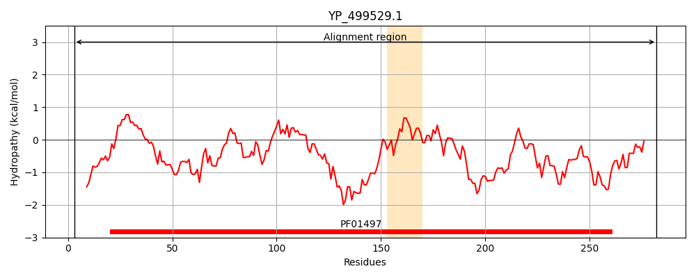
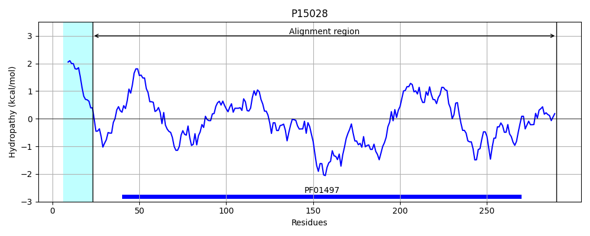
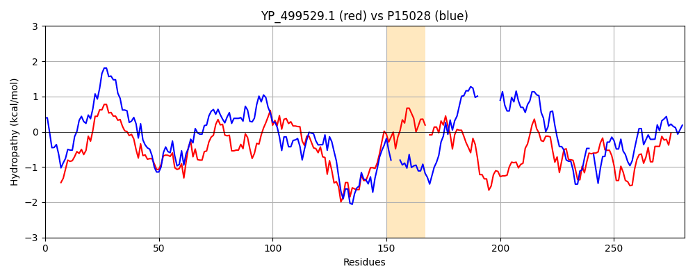

Hit Accession: P15028
Hit TCID: 3.A.1.14.1
Hit Description: gnl|BL_ORD_ID|9147 gnl|TC-DB|P15028|3.A.1.14.1 Iron(III) dicitrate-binding periplasmic protein precursor - Escherichia coli.
Mach Len: 281
e:0.000000
Query TMS Count : 1
Hit TMS Count: 1
TMS-Overlap Score: 0.000000
Predicted Substrates:CHEBI:84734;Fe(III)-complexed siderophore
BLAST Alignment:
Score: 438 , Bit scores: 173 bits, E-value: 1.6e-52, Alignment length: 281, Percentage identity: 37
Query: 3 TIKDELGTEKIKKNPKRVVVLEYSFADYLAALDMKPVGIADDGSTKNITKSVRDKIGAYESVGSRPQPNMEVISKLKPDLIIADVSRHKKIKSELSKIAPTIMLVSGTGDYNANIEAFKTVAKAVGKEKEGEKRLEKHDKILAEIRKKIEQSTLKSAFAFGISRAGMF-INNEDTFMGQFLIKMGIQPEVTKDKTTHVGERKGGPYIYLNNEELANINPKVMILATDGKTDKNRTKFIDPAVWKSLKAVKDNKVYDVDRNKWLKSRGIIASESMAEDLEKI 282
T++DE GT ++K P+R+VVLE SFAD LAA+D+ P+GIADD K I VR + ++SVG+R QP++E I+ LKPDLIIAD SRH + L +IAP ++L S Y N+++ + + VGK++E + RLE+H + +A+ ++ + T AFG SR F ++ ++T+ G L +G+ G + E+L +NP +++A + + DP +W+ L A + +V VD N W + RGI A+E +A D KI
Sbjct: 23 TVQDEHGTFTLEKTPQRIVVLELSFADALAAVDVIPIGIADDNDAKRILPEVRAHLKPWQSVGTRAQPSLEAIAALKPDLIIADSSRHAGVYIALQQIAPVLLLKSRNETYAENLQSAAIIGEMVGKKREMQARLEQHKERMAQWASQLPKGT---RVAFGTSREQQFNLHTQETWTGSVLASLGLNVPAA---------MAGASMPSIGLEQLLAVNPAWLLVAHYREESIVKRWQQDP-LWQMLTAAQKQQVASVDSNTWARMRGIFAAERIAADTVKI 290 | Protein Hydropathy Plots: |
|---|
|  |  |
Pairwise Alignment-Hydropathy Plot:
|
|---|
|  |